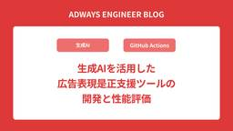

Adwaysエンジニアブログ
https://blog.engineer.adways.net/
adwaysエンジニアブログ
フィード

生成AIを活用した広告表現是正支援ツールの開発と性能評価
Adwaysエンジニアブログ
こんにちは、アドプラットフォーム事業部でアプリケーションエンジニアをやっている渡辺です。 現在、私は携わっているプロダクトで生成AIを組み込んだ機能を開発しています。そこでこの記事では、生成AIをどのようにプロダクトに取り入れたかをご紹介したいと思います。
2日前

チームでTDD本の輪読会をしたら、TDDの本質が分かった気がした
Adwaysエンジニアブログ
こんにちは。アドプラットフォーム事業部でリードアプリケーションエンジニアをしているDJです。 最近スタンドライトを買いました。今までシーリングライトのみしかなく、色温度も変えられなかった我が家に革命が起きました。時刻に応じて自動で明るさや色温度を変えることで、自然に眠くなってスムーズに入眠できます。 さて、私が所属するチームではTDD（テスト駆動開発）を活用して開発しているのですが、このTDDをより良いものとするために「テスト駆動開発」（Kent Beck著）の輪読会を行いました。 本記事では、その輪読会で得られた知見を共有したいと思います。 本記事は、すでにTDDについて基本的な知識をお持ち…
8日前
Google Cloudの料金削減を色々試してみた
Adwaysエンジニアブログ
こんにちは！広告事業本部でリードアプリケーションエンジニアをしている半田です。 花粉症がつらい季節ですね。今年は特にひどく、薬を飲まないと仕事にならなかったため、舌下免疫療法を始めることを決心しました…。 さて、今回はGoogle Cloudの料金削減について取り組んだ内容をご紹介します。 背景 料金削減の流れ 現状のコスト把握 BigQueryの料金削減に向けた可視化 スケジュールされたクエリの設定 Looker Studioで可視化 施策1 不要なカラムの更新処理やデータ取得の停止 施策2 増分更新を行う 施策3 パーティションの追加 施策4 増分テーブルで全体をスキャンしないようにする …
15日前
AdwaysにおけるGitHub Actionsのサードパーティーアクションの利用と運用方法 with Terraform
Adwaysエンジニアブログ
こんにちは。人事・技術・経営推進本部 技術戦略ディビジョンでマネージャーをしています、奥村です。本記事では、AdwaysにおけるGitHub Actionsのサードパーティーアクションの利用ルールと許可設定などの運用方法を紹介します。 GitHub Organizationの設定をTerraformで管理しているので、サードパーティーアクションに関わる部分の実装例も合わせて紹介します。
22日前
新卒1年目で初めて出会ったテスト駆動開発
Adwaysエンジニアブログ
こんにちは！2024年4月に新卒で入社し、ギリギリまだ社会人1年目のにっしーです。 普段はアドプラットフォーム事業でアプリケーションエンジニアとして開発運用業務を行っています。研修後に私が配属されたモダナイズチームでは、弊社が運用しているアフィリエイトサービスのトラッキングシステムを刷新するプロジェクトに取り組んでいます。 本プロジェクトに携わった社員による記事が公開されていますので、ぜひ読んでみてください。この1年さまざまなことを学び実践してきた中で、今回はテスト駆動開発（TDD: test-driven development）についてお話ししようと思います！
1ヶ月前
Findy Team+のサイクルタイム分析で開発スピードを爆上げした話
Adwaysエンジニアブログ
こんにちは！広告事業本部でリードアプリケーションエンジニアをしている高木です。 私が所属するチームでFindy Team+を導入し、サイクルタイムの改善に取り組みましたので、その内容を紹介いたします。 Findy Team+は、GitHubやJiraなどの開発ツールと連携し、開発生産性の可視化・向上を支援するツールです。 サイクルタイムとは最初のコミットからマージされるまでの時間のことで、開発効率を測る指標の1つです。 Findy Team+では、サイクルタイムの平均時間に加えて以下の各プロセスのリードタイムも確認できます。 コミットからオープンまでの平均時間 オープンからレビューまでの平均時…
1ヶ月前
チームでメールサーバ勉強会をした話
Adwaysエンジニアブログ
こんにちは、インフラストラクチャーDivに所属しているインフラエンジニアの久保です。 今回はチームでメールサーバの勉強会を実施した話をしたいと思います。 勉強会実施の背景 昨年CentOSのEoL対応のため、メールサーバーの引き継ぎ兼EoL対応をしました。 弊社ではPostfixを利用しておりましたが、Postfixに関する知識はそれほどなく、EoL対応をしながら色々調べ知識を付けていきました。 EoL対応は何とか終わりましたが、そこでふと「これ引き継いだはいいものの、チームで運用出来るのか…？」と思いました。 このままではいかんと思い、最初は構成図や設計書を残し共有しようかと考えました。 し…
1ヶ月前
長年塩漬け状態にあるAnsibleの運用から脱却するためのCI/CDパイプライン構築
Adwaysエンジニアブログ
こんにちは、アドプラットフォーム事業で開発運用業務を行っているリードアプリケーションエンジニアのまっちゃん（@honyanyas）です。 この記事の公開日は2025年2月28日です。 何の日でしょうか？そうです、2001年2月28日に設立された株式会社アドウェイズの24周年です。 事業、プロダクト開発、バックオフィス関係なしに全員が新しいことに挑戦・改善をし続けています。 自分自身もまだまだできることはあると思うので、引き続き成果を意識しつつ貢献していきたい所存です。 今回の記事では所属チームがAnsibleのCI/CDパイプラインの構築を整備しなおし、IaCプロセスを改善した事例を簡単に共有…
2ヶ月前
請求処理を担う専門チームで行っていること
Adwaysエンジニアブログ
人事・技術・経営推進本部 インフラストラクチャーDivアカウンティングサポートUnitの熊澤です。今年1月から組織名がやや長くなりました。英語表記だとHuman Resources, Technology, Businessです。そこから取って略称はHTB本部です。よろしくお願いします。今回は熊澤が昨年から担当している業務についてご紹介します。
2ヶ月前
BigQueryのPipe syntax (パイプ構文) を使ってみたら可読性と使いやすさがちょびっと向上した
Adwaysエンジニアブログ
こんにちは！アドプラットフォーム事業部でアプリケーションエンジニアをやっている渡辺です。 今日はBigQueryに追加された新機能「Pipe syntax」が個人的にとても気に入ったのでその紹介をしたいと思います。 シャレオツな書き方をして気分を上げていきましょう！
2ヶ月前
新卒１年目で業務改善プロジェクトに参加したら苦難だらけだった話
Adwaysエンジニアブログ
アドプラットフォーム事業で業務改善を行なっている24新卒アプリケーションエンジニアのなおっちです！私は新潟が地元なのですが、今年はあまり雪が積もらなかったようです。昔はよく家の前でかまくらをつくっていたのですが、今はかまくらを作れるほどの雪がないようで物悲しく思っています。 話は変わりますが、最近、配属されてから7か月間行なってきた業務改善のプロジェクトが終了しました！ そこで今回は、新卒として業務改善チームに配属されてからの苦難についてお話ししたいと思います。今では業務に貢献できるようになってきましたが、最初の頃は何もわからず大変なことが多くありました。業務改善のプロジェクトで右も左も分から…
2ヶ月前
QuickSightのログをBigQueryから閲覧できるようにした話
Adwaysエンジニアブログ
こんにちは。広告事業本部でアプリケーションエンジニアをしている24卒の茅野(ちの)です。 社会人生活一年目はさまざまなことを経験することができ、あっという間に一年が過ぎました。 私は現在、MediaAnalyzerシリーズ(以下MA)の開発を行っております。 MediaAnalyzerシリーズは、広告の配信結果の分析や最適化を行うために開発されました。 詳しくはこちらのリリースをご覧ください。 本記事では、S3にあるAmazon QuickSightのログを定期的にBigQueryに転送する方法について紹介していきます。 背景 採用した方法 BigQueryへの転送 アクセス回数のカウント 採…
3ヶ月前
SCCで検知した問題のあるFWルールを自動削除する予防的ガードレールをCloud Run Functionsで実装してみた！
Adwaysエンジニアブログ
こんにちは！ 人事・技術・経営推進本部 インフラストラクチャーDiv リードインフラエンジニアの入田です！ 普段の業務では社内のインフラの運用をオンプレ・クラウド問わず行っています。 2024年10月に入社し、気づいたら年を越していたので時間の速さにびっくりしています。試用期間も無事終了しひと安心です。 本記事ではGoogle CloudのSCC(Security Command Center)でセキュリティ脅威として検知した問題のあるFWルールを自動削除する予防的ガードレールを、 最近名前が変わったCloud Run Functions(旧 Cloud Functions)で実装してみたので…
3ヶ月前
社内スタートアップのリアル：DM検証失敗から得た教訓
Adwaysエンジニアブログ
こんにちは！UIUXデザイナーの里見です！今回は私たちが昨年11月まで挑戦していた新規事業「OshiTie!（オシタイ）」について、その挑戦がなぜ失敗に終わってしまったのかを、特にダイレクトメッセージを使ったアタック検証（以下DMアタック検証）にフォーカスして振り返りたいと思います。「失敗談」と聞いて「なんか重そう。。」と思った方もいらっしゃると思いますが、色んな挑戦を繰り返した過程をポジティブに表現して書いていきますので、ぜひ最後までお付き合いいただけると嬉しく思います！
3ヶ月前
Cloud Audit Logsのデータアクセス監査ログから, BigQueryへのデータアクセスを可視化する方法
Adwaysエンジニアブログ
広告事業本部でリードデータエンジニアをしている大窄 直樹 (おおさこ)です. 今回は, BigQueryの各データへのアクセスを可視化する方法について執筆します. 背景/課題 BigQueryのアクセスログの調査 BigQueryのINFOMATION_SCHEMA Cloud Audit Logs 実装 Cloud Audit Logsのデータアクセス監査ログをログルーターを用いてBigQueryに転送 BigQueryアクセスログを見やすくするViewを作成 Looker Studioで可視化 まとめ 背景/課題 弊社では, データ基盤をBigQueryに作成しています. 年々利用用途, …
3ヶ月前
新卒1年目でアフィリエイトサービスのクラウド移行プロジェクトに参加しました！〜調査・設計編〜
Adwaysエンジニアブログ
アドプラットフォーム事業で開発運用業務を行っているアプリケーションエンジニアの山本です。私は2024年4月にアドウェイズに新卒入社して、現在はオンプレミスからパブリッククラウドへの移行を中心とした業務を担当しています。2024年も残りわずかとなりましたが、皆さんにとって今年はどんな一年だったでしょうか？私にとって今年は学生から社会人へと変わる節目の年であり、多くの学びと成長の機会に恵まれた一年でした。また、同期のエンジニアとも仲良くなることができました。特に、富士山を見るために山梨県・静岡県まで車を走らせて一泊二日の旅行をしたのはとても楽しかったです。さて、今回の記事では、新卒1年目ながらコアサービスのクラウド移行プロジェクトに参加した経験についてお話します。私と同年代のエンジニアや学生の方、さらにはAWSなどのクラウドサービスに興味のある方を対象に記事を書きました。クラウド移行の具体的なプロセスや実践的な学びとしてご参考になれば幸いです！
4ヶ月前
約半年間、新規事業に取り組んで無残に散った話
Adwaysエンジニアブログ
こんにちは！アドプラットフォーム事業部でリードアプリケーションエンジニアをやっています、shoです。 今年もあっという間に年末ですね。皆さんは今年一年いかがだったでしょうか？私の今年一年を振り返ると、4月中旬ごろまではTanzuLabs様と一緒にJANetのモダナイゼーションを実施した後、インフルエンサー領域の新規事業を立ち上げる社内プロジェクト（以下新規事業PJ）にジョインしていました。https://blog.engineer.adways.net/entry/2024/05/24/110000先に結論を述べると、11月末で今回の新規事業PJは断念（失敗）する形になりました。。（悲しい、、）この失敗は何か1つの単純な問題で片付けられるような話ではなく、それまでの過程でたくさんの失敗・間違いが積み重なっての結果だと考えています。 今回は約半年間、ゼロの状態から新規事業に取り組み、たくさんの失敗から何を学んだのかをお話しさせていただきます。
4ヶ月前
【Ruby on Rails】使われていないコードを見つけるためにCoverbandを入れた話
Adwaysエンジニアブログ
はじめまして、広告事業本部でアプリケーションエンジニアをしている24新卒の龍溪です。 入社してから早くも9か月が経ち、時の流れの速さを痛感しています。 本記事では、Ruby on Railsで使われていないコードを発見するためにCoverbandというGemを入れた話について紹介しようと思います。 背景 Coverband とは Coverband の設定 Tips Web UI に認証をかける 計測結果の収集頻度 計測対象のディレクトリの追加 Coverband と Amazon ElastiCache 実際に運用してみて おわりに 背景 私たちのチームでは、Ruby on Railsを使っ…
4ヶ月前
「技術広報やってます！」最近技術広報に携わっているエンジニアが最初にやりはじめたこと
Adwaysエンジニアブログ
この記事は技術広報 Advent Calendar 2024の11日目の記事です。こんにちは、アドプラットフォーム事業で開発運用業務を行っているリードアプリケーションエンジニアのまっちゃん（@honyanyas）です。アドウェイズエンジニアブログの運営を担当しつつ、最近は技術広報の領域にも携わっています。"最近は技術広報の領域にも携わっています。"技術広報アドベントカレンダーにエントリーしてみたので簡単に書いてみます。
4ヶ月前
【イベント開催レポート】株式会社BuySell Technologiesさんと『2024年を振り返ろう！若手エンジニアのための交流LTナイト』を開催しました
Adwaysエンジニアブログ
こんにちは、アドプラットフォーム事業で開発運用業務を行っているリードアプリケーションエンジニアのまっちゃん @honyanyas です。 アドウェイズエンジニアブログの運営を担当しつつ、最近は技術広報の領域にも携わっています。 2024/12/4（水）株式会社BuySell Technologies（以下バイセル）さんと『2024年を振り返ろう！若手エンジニアのための交流LTナイト』を開催しました！ 今回はバイセルさんとの初のコラボイベントかつアドウェイズとしても技術イベント開催は数年ぶりとなります。弊社からは伊藤、中野の2名が登壇、登壇者含め計8名の若手エンジニアが本イベントに参加をしました。簡単にですが当日の様子を中心に開催レポートをまとめます。
4ヶ月前
編集チームの運用負荷とPVの伸び悩みからアドベントカレンダーをおやすみしています
Adwaysエンジニアブログ
こんにちは、アドプラットフォーム事業で開発運用業務を行っているリードアプリケーションエンジニアのまっちゃん（@honyanyas）です。 今日はエンジニアブログ関連について書きます。もうそろそろアドベントカレンダーの時期ですね！ アドウェイズエンジニアブログ、昔アドベントカレンダーやってましたよね？今やってないんですか？？ という声が聞こえてきた気がするので、今現在アドベントカレンダーをおやすみしている理由について簡単に書いていきます。
5ヶ月前
再始動した社内LT会の裏側
Adwaysエンジニアブログ
この記事では広告事業本部のアプリケーションエンジニアが部署内でLT会を運営していると聞き、その裏側に迫るべくインタビューを行いました。 インタビュイー紹介 インタビューアー紹介 LT会を再開したきっかけ LT会の内容 運営をする上での苦労 アンケートからの改善 今後の展望 メッセージ
5ヶ月前
【MySQL】メジャーバージョンアップグレードの味方: “アップグレードチェッカーユーティリティ”を理解して活用しよう
Adwaysエンジニアブログ
あいさつ こんにちは！ 技術本部 技術戦略Div. リードエンジニアの関根です！ 2024年9月にジョインして、コツコツSRE活動を進めておりますっ エンジニア3年目ながらSREにゴリゴリ関われているのは、アドウェイズにオープンなコミュニケーションの文化があるおかげです。SREに少しでも興味がある人は、お待ちしておりますよ！ 最近、Netflix、アマプラ、U-NEXTに加えてAppleTVも契約してしまいました笑 映画やドラマの話しましょうね！ あとお酒が大好きなので、社内外問わず飲みに行きましょうね！！ この記事はなに？ この記事は、MySQLメジャーバージョンアップグレード時にアップグレ…
5ヶ月前
デザイナー兼子育てママがADWAYSに入社して6ヶ月経ってみて
Adwaysエンジニアブログ
初めまして！2024年4月に中途入社したアドプラットフォーム事業で新規事業プロジェクトに参加しているUI/UXデザイナーの里見です！入社してあっという間に6ヶ月が経過しました。もう年末です。月日が経つのは早いですね〜。今回はADWAYSにデザイナー志望で入社したい方や、子育てと両立した働き方をしたい方に向けて記事を書いていこうと思います！内容は、私が就職活動をする上で軸として大切にしていたことと、それがADWAYSに入社してどのくらい満たせていたかを正直にお話しできればと思っております。これからADWAYSに転職を検討されている方や、子育てと仕事の両立で悩んでいる方のご参考になれば幸いです。
5ヶ月前
外部デザイン支援を入れた新規事業プロジェクトで社内デザイナーが学びを得た話
Adwaysエンジニアブログ
こんにちは、アドプラットフォーム事業でシニアプロダクトデザイナーをやっています、中野です。 今年の4月からインフルエンサー領域の新規事業プロジェクトに携わっています。 6〜8月には株式会社ルート（以下root）様にデザイン支援をお願いし、プロダクト開発におけるリサーチから事業設計、最終的に社内事業本部へのプレゼンまで実施しました。 今回は、3ヶ月間のrootとの伴走で得た学びについてお話しします。 外部のデザイン支援を受けた目的 ユーザー価値と事業価値のバランスを取る スピード感あるリサーチの実施 プロジェクトメンバーと大まかなタイムライン 最初の衝撃（6月） 少しずつ活かす（7月） 怒涛の終…
5ヶ月前
業務で使用している .zshrc 大公開！！！ 〜〜ちょっとした解説付き〜〜
Adwaysエンジニアブログ
こんにちは！！！ 広告事業本部でアプリケーションエンジニアをしている森田です！！ みなさん、Zsh使ってますか？？ 僕は昨年、新卒で入社したタイミングでbashから乗り換えて使い始めました。 業務でMacを使用するようになり、シェルを立ち上げるたびに「デフォルトZshやから乗り換えてな」的なメッセージが出てくるのが嫌で乗り換ることになりました... きっかけとしてはこの通り受動的なものだったのですが、使ってみると意外と高機能でプラグインも豊富で以前よりよい開発体験を得ることができています。 乗り換えたてのころ、まわりの皆さんがどんな設定にしているのかなと気になり、 「ゾッシュってどんな設定にし…
6ヶ月前
EoL対応という大きな仕事を通して、主体的にタスクを行う重要性を学びました
Adwaysエンジニアブログ
こんにちは。 技術本部 技術戦略ディビジョンでシステムエンジニアをしています山中です。最近寒暖差が激しく、体調を崩しやすい時期になってきました。これから寒くなるので布団から出られないということがありそうです。さて今回は3か月半行なったタスクの内容を記事にしました。 大きなタスクでしたが「全て自分でやらないといけない」と思い込んで、チームメンバーに迷惑をかけてしまったのと同時に、多くの学びを得ることができました。弊社ではソースコード管理の一部をGitLab Self-Managed版(以下GitLab)を使用しています。 もともとGitLabはオンプレミスで運用しておりましたがクラウド移行しました。 その際にEC2インスタンス上のOSはCentOS7が採用されましたがEoLを迎えることもあり、今回Amazon Linux 2023へ移行しました。 今回はその移行作業における奮闘記を記述します。
6ヶ月前
GitHub Actionsコンテナ利用時にansible-lintの実行結果がローカル環境と異なったので原因調べました
Adwaysエンジニアブログ
こんにちは、アドプラットフォーム事業で開発運用業務を行っているリードアプリケーションエンジニアのまっちゃんです。 最近はオンプレミスからパブリッククラウドへの移行やAnsibleのCI/CDパイプラインの見直し・改善などを行っています。最近はさまざまな技術カンファレンスに参加しており、10月頭はYAPC::Hakodate 2024、先週の土曜日はBTCONJP 2024、明日はVue Fes Japan 2024にも参加予定です！ また登壇も機会があれば積極的に参加しており、9月末のXP祭り2024にもペアプロ・モブプロ関連のテーマで登壇しました！ 今後も技術カンファレンスの参加、登壇を積極的に行いたいと思ってますのでよろしくお願いいたします！本日の記事はAnsibleにおけるCI/CDパイプラインの見直し・改善を進める中でGitHub Actions周りで遭遇した問題と解決方法について共有します。
6ヶ月前
GitHubにDependabotを導入した
Adwaysエンジニアブログ
広告事業本部に所属しているデータエンジニアの木本です。 今回はチームで使用しているGitHubにDependabotを導入してRailsのGemのアップデートの自動化を行なったことについて記事を書こうと思います。 背景 Dependabotの概要と機能を調べてみる Dependabotバージョンアップデートの導入方法 設定ファイルの作成 新バージョンチェックの頻度の指定 自動で作成されるPRの数 チェックするバージョンの粒度 アップデートしないGemの指定 実際に導入してみる PRに書かれる内容 導入した感想 まとめと今後の展望 背景 私たちのチームはRailsを使用したアプリケーションを開発…
6ヶ月前
CentOS7 EOLに伴うサーバーのIaC化挑戦記 ～Ansibleの導入とチームでの成長～
Adwaysエンジニアブログ
みなさんお久しぶりです。技術本部インフラストラクチャーDivの中嶋です。 最近はめっきりDeadlockという開発中のゲームにハマっています。 さて、今回私が執筆する内容はCentOS7のEOLを目前に、私たちのチームでオンプレミスサーバーのIaC（Infrastructure as Code）化に取り組んだ話となります。 特に、Ansibleを使ったサーバー構築の自動化にチャレンジすることとなり、その過程で多くの議論と学びが生まれました。 今回は、その経験と苦労、そしてAnsibleを活用して得た成果についてお話させていただきます！ プロジェクト背景とAnsible化の理由 Ansible初…
7ヶ月前